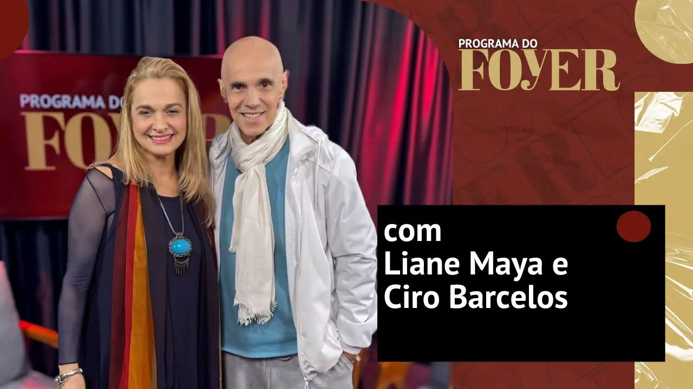

Programa
Com Mau Alves, Guil Anacleto e Maju Brunelli - Liberdade Liberdade - Programa do Foyer
Chegou a 6º temporada do Programa do Foyer, e com ela temos novos quadros, novo cenário mas, o mesmo humor e irreverência de sempre!…
106 matérias — página 1 de 5
Chegou a 6º temporada do Programa do Foyer, e com ela temos novos quadros, novo cenário mas, o mesmo humor e irreverência de sempre!…


